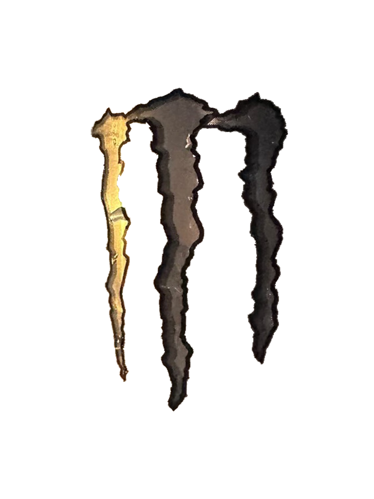
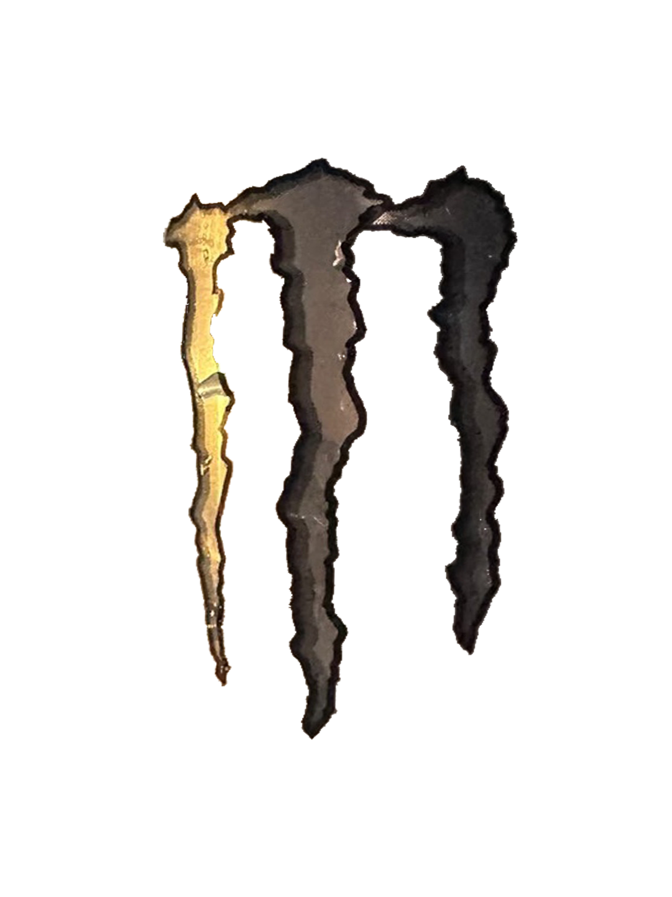
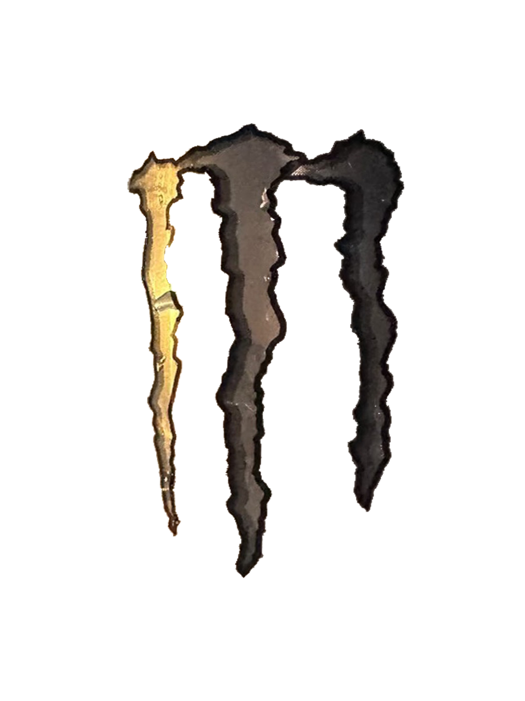

사각형
형태
사각형의 표지판은 기타 보조 표시로 거리를 나타내거나 도로 상태 등을 나타낸다. 가장 흔히 볼 수 있는 형태이다. 사각형은 안정과 엄격함, 무거움, 신뢰, 힘, 진지함을 나타낸다. 또 정직함과 견고함, 안정감을 상징하는 신뢰받는 친숙한 형태다. 사각형에는 직선과 직각이 있기 때문에 매우 수학적이고 균형 잡힌 느낌을 준다.

사각형의 표지판은 기타 보조 표시로 거리를 나타내거나 도로 상태 등을 나타낸다. 가장 흔히 볼 수 있는 형태이다. 사각형은 안정과 엄격함, 무거움, 신뢰, 힘, 진지함을 나타낸다. 또 정직함과 견고함, 안정감을 상징하는 신뢰받는 친숙한 형태다. 사각형에는 직선과 직각이 있기 때문에 매우 수학적이고 균형 잡힌 느낌을 준다.
삼각형